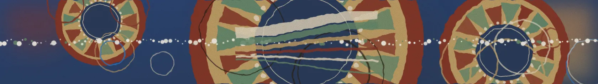

Analysis

Where does the federal money go
In 2025 Brazil's federal Executive branch paid out R$ 5.09 trillion. That is enough to give R$ 24,000 to every Brazilian, babies included. But more than a third of it never became a hospital, a school or a pension: it went to debt amortisation, almost all of it done by swapping maturing bonds for new ones. Without that amortisation, R$ 3.30 trillion is left, and 44% of it goes to two destinations: the INSS (the national social security institute) and the municipalities.
We followed the money in three steps: where it comes from, which area of the budget it passes through and who receives it in the end. The answer is in the diagrams below, where the width of each band is proportional to the amount it carries.
How to read a sankey. Money flows from left to right. Each vertical bar is a waypoint (a budget area, a programme, a recipient) and each coloured band is an amount. A band twice as wide carries twice the money. The colour follows the recipient.
1. The whole map

The largest bar in the middle, "special charges" (encargos especiais, R$ 2.88 trillion), is not a ministry. It is the place in the budget for the bills that belong to no public policy: the debt, the transfers the Constitution requires to states and municipalities, and the coverage of the Central Bank. Right below comes social security (R$ 1.08 trillion). Health and education together do not reach a tenth of the total.
| who received it, in 2025 | amount | share of total |
|---|---|---|
| debt: amortisation and refinancing | R$ 1.79 tn | 35.2% |
| INSS retirees and pensioners | R$ 977 bn | 19.2% |
| municipalities | R$ 461 bn | 9.1% |
| interest to debt holders | R$ 363 bn | 7.1% |
| states and the Federal District | R$ 362 bn | 7.1% |
| families: Bolsa Família, BPC, unemployment insurance, wage bonus | R$ 357 bn | 7.0% |
| active civil servants and military | R$ 197 bn | 3.9% |
| loans and equity stakes (Fies, BNDES, funds) | R$ 182 bn | 3.6% |
| retired civil servants and military, and their pensioners | R$ 158 bn | 3.1% |
| companies: purchases, services and works | R$ 134 bn | 2.6% |
| other (subsidies, organisations, court rulings, prior-year bills) | R$ 112 bn | 2.2% |
2. Out of every R$ 100

Excluding debt amortisation, every R$ 100 spent by the federal government is split like this:
- R$ 30 go to the INSS. It is the largest single destination, larger than states and municipalities combined (R$ 25).
- R$ 11 go to interest. That is as much as Bolsa Família (the cash-transfer programme), the BPC, unemployment insurance and the wage bonus cost together.
- R$ 11 go to federal civil servants, R$ 6 to active staff and R$ 5 to retirees and pensioners.
- R$ 4 buy something from a company: medicine, computers, construction works, cleaning services. The image of a government that spends by buying things is wrong. The federal government mostly pays people and other governments.
3. Debt pays for debt

To also see where the money comes from, the year is 2023, the last with complete revenue and spending in the source. That year the government's largest source of money was not any tax at all. It was the sale of government bonds: R$ 1.75 trillion borrowed on the market, 41% of everything that came in. Almost the same amount (R$ 1.65 trillion) left through the other end as amortisation, mostly to redeem old bonds. This is the rollover: maturing debt is paid with new debt.
Of the actual taxes, the largest were income tax (R$ 667 bn) and social security contributions (R$ 621 bn, from workers, companies and civil servants), which do not cover the cost of social security: INSS benefits alone cost R$ 788 bn in 2023. Oil and mining royalties brought in R$ 103 bn.
Why is there money left over at the end? Revenue covers the whole federal government. Spending in the diagram is only that of the Executive branch. The R$ 165 bn difference includes what Congress, the Judiciary and the Public Prosecutor's Office spent, plus what stayed in the Treasury's cash.
4. Opening the black box of "special charges"

Inside the R$ 2.88 trillion:
- R$ 1.36 trillion is the refinancing of domestic debt, the bond swap itself (plus R$ 48 bn of foreign debt).
- R$ 576 bn is "debt service": R$ 330 bn of interest and the rest in redemptions.
- R$ 362 bn are the FPM and FPE, the shares of income tax and IPI (a federal tax on manufactured goods) that the Constitution requires to be handed to municipal and state governments.
- R$ 124 bn covered the Central Bank's negative result. When the Central Bank posts a loss, the Treasury pays. Because it is classified as debt amortisation, this money appears added to amortisation on the overall map.
- R$ 86 bn are the federal share of Fundeb (the basic-education fund) and R$ 60 bn are oil royalties passed on to producing states and municipalities.
5. Social protection: the INSS is two thirds

Social security, social assistance and labour added up to R$ 1.49 trillion in 2025. INSS benefits (retirement, pensions and allowances) are R$ 977 bn of that, 66%.
| programme | 2025 |
|---|---|
| INSS benefits | R$ 977 bn |
| Bolsa Família | R$ 158 bn |
| BPC (low-income elderly and people with disabilities) | R$ 121 bn |
| civil servants' retirement and pensions | R$ 84 bn |
| unemployment insurance | R$ 57 bn |
| wage bonus (PIS) | R$ 31 bn |
| FAT (workers' fund) lent to BNDES | R$ 29 bn |
For comparison: the whole of Bolsa Família costs 16% of what INSS benefits cost.
6. Health: the federal SUS is, above all, transfers

Of the R$ 239 bn in the health function, R$ 168 bn (70%) left as transfers: R$ 130 bn to municipalities and R$ 38 bn to states. Whoever hires the doctor, runs the clinic and pays the hospital is the municipality or the state. The federal government funds and transfers. The largest item is medium and high complexity care (hospitals, surgery, tests), with R$ 83 bn.
Two items stand out for their name: the "temporary increment" for primary care and for hospitals, which add up to R$ 23 bn. A large part of the congressional earmarks for health flows through these actions (see section 10).
7. Education: federal teachers and Fundeb

Of the R$ 184 bn for education, two items make up two thirds: the payroll of active staff at federal universities and institutes (R$ 62 bn) and the federal top-up to Fundeb (R$ 60 bn), which goes to state and municipal basic-education systems. School meals cost R$ 5.6 bn, and Fies (student loans), R$ 5.8 bn.
8. Defence: more retirees than aircraft

Defence cost R$ 99 bn. Reserve and retired military personnel (R$ 34 bn) already cost as much as active troops (R$ 33 bn), and military pensions, another R$ 26 bn, do not even appear here: they are in special charges. The Gripen fighter jets cost R$ 1.4 bn and the submarine programme (the nuclear one, the conventional ones and the shipyard) R$ 3.0 bn. Together, 4% of defence.
9. To states and municipalities: who receives the most

In 2025 the federal government transferred R$ 811 bn to state and municipal governments. Two thirds are automatic: FPM (R$ 172 bn), FPE (R$ 164 bn), Fundeb (R$ 144 bn) and royalties (R$ 71 bn). SUS (the public health system) accounts for another R$ 172 bn.
Why is FPM R$ 172 bn here and R$ 198 bn in section 4? The transfers publication does not include the three extra 1% FPM instalments, paid in July, September and December. Month by month, the difference from budget execution shows up only in those three months and adds up to R$ 26 bn. The figures by region and per inhabitant below are therefore slightly below the real amount for municipalities.
The Northeast receives 38% of the total, more than the Southeast (29%), which has more people. Per inhabitant, the gap becomes huge:

A resident of Acre "receives" R$ 12,424 a year in federal transfers to their state and municipality. A resident of São Paulo, R$ 1,638: 7.6 times less. It is no accident. The FPE and FPM rules were designed to redistribute from rich, populous states to poor, sparsely populated ones, and the top three on the list (Acre, Amapá and Roraima) are the least populous in the country.
10. The lawmakers' budget

Deputies and senators chose the destination of R$ 36.7 bn of the 2025 budget already paid. 65% went to health. Almost a fifth (R$ 6.9 bn) left as "Pix" earmarks, the special transfer that lands in the municipality's or state's account with no defined purpose. In the budget it appears under "special charges", not in a public policy area.
Compared with the total budget, earmarks are small: 1.1% of spending excluding debt amortisation. But they are the part whose destination lawmakers choose, and so they weigh more in politics than in the total.
11. Twelve years: what grew and what shrank

Adjusted for inflation, between 2014 and 2025:
- Grew: states (+54%), municipalities (+48%), families (+46%, with the peak of the emergency aid in 2020) and the INSS (+38%, or R$ 269 bn more per year).
- Interest paid in cash fluctuated: the peak was in 2020 and the low in 2023. In 2025 it was 15% above 2014.
- Shrank: active civil servants (−7%), retired civil servants (−3%) and, above all, purchases and works (−22%). The slice of the budget the government decides day to day has been squeezed by what is mandatory.
How it was done and what is left out
- Only the Executive branch. Congress, the Judiciary, the Public Prosecutor's Office and the Court of Audit are not in the spending execution data used here.
- "Paid" means money that left in the year: payments from the year's own budget plus prior-year commitments (restos a pagar) settled in the year. In the 2023 sankey with revenue, only payments from the year's own budget, to compare with revenue for the same year.
- "Who received it" is our own classification based on the nature of the expense (group, modality and element). "Municipalities" and "states" are transfers to those governments, which then spend on their own. "Families" are benefits paid directly to people. "Companies" is what is bought from suppliers and contractors.
- Amortisation is not new spending, but it is money leaving the cash account. That is why it appears in the first map and is left out of the others. It includes covering the Central Bank's loss (R$ 111 bn) and the assumption of FCVS debts (R$ 24 bn), besides the bond swap.
- Interest is only what is paid in cash. Inflation adjustment of the principal is recorded as amortisation. That is why the amount is well below the nominal interest on the debt that the Central Bank publishes, which measures something else (the cost the debt accumulates during the year).
- Revenue stops in 2023 because the 2024 publication in the source ends on 7 December.
- Inflation adjusted by the annual average IPCA (consumer price index), at 2025 prices.
- 2025 earmarks are still being paid as prior-year commitments. The amount is what was paid up to the source's last update and should grow.
- FPM in the transfers without the extra July, September and December instalments (R$ 26 bn in 2025). Budget execution includes them.
Sources. Office of the Comptroller General (CGU), Transparency Portal: spending execution of the federal Executive branch (2014 to 2025), federal revenue (2023), federal transfers to states, the Federal District and municipalities (2025) and congressional earmarks (2025). IBGE: IPCA and population estimates by state (2025).